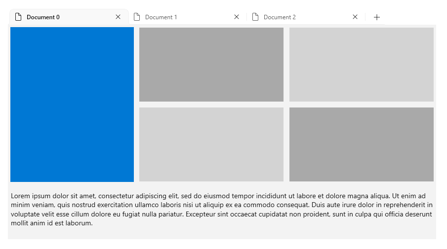
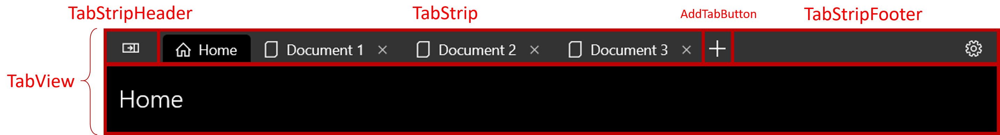
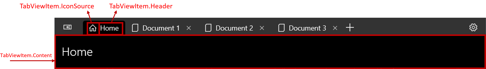
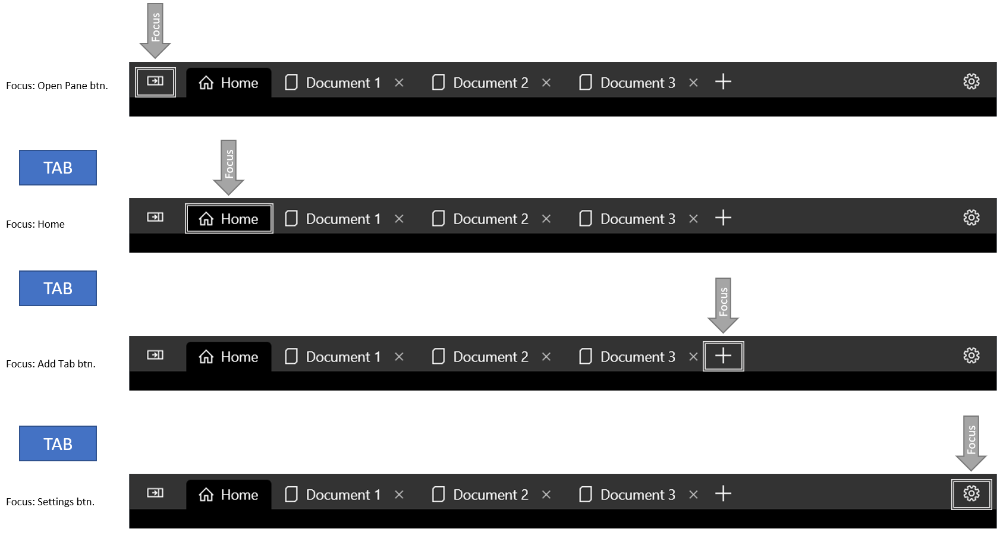
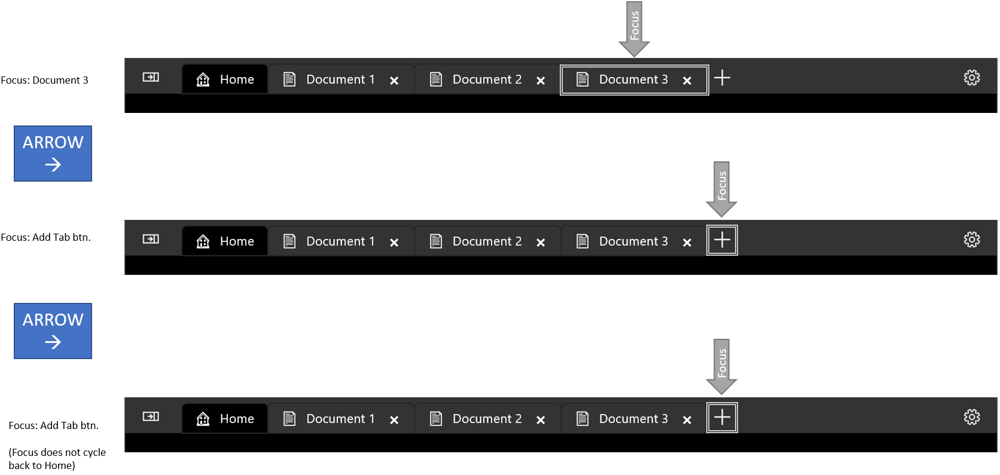
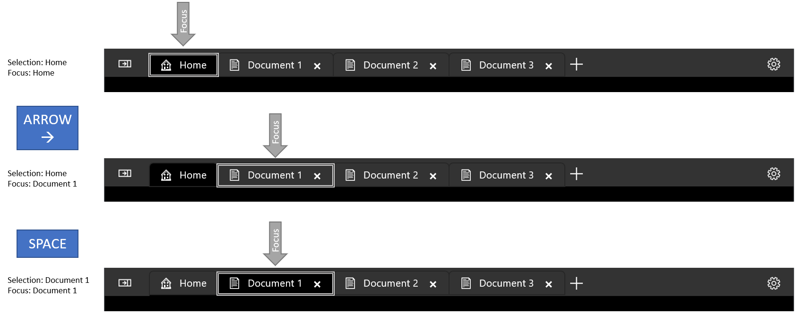
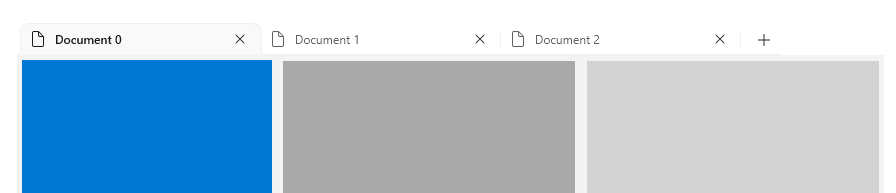

Tab view
The TabView control is a way to display a set of tabs and their respective content. TabView controls are useful for displaying several pages (or documents) of content while letting a user rearrange, close, or open new tabs.

Is this the right control?
In general, tabbed UIs come in one of two distinct styles that differ in function and appearance:
- Static tabs are the sort of tabs often found in settings windows. They contain a set number of pages in a fixed order that usually contain predefined content.
- Document tabs are the sort of tabs found in a browser, such as Microsoft Edge. Users can create, remove, and rearrange tabs; move tabs between windows; and change the content of tabs.
By default, TabView is configured to provide document tabs. We recommend TabView when users will be able to:
- Dynamically open, close, or rearrange tabs.
- Open documents or web pages directly into tabs.
- Drag and drop tabs between windows.
The TabView API does allow configuring the control for static tabs. However, to follow Windows design guidance, and if there are more than a few static navigation items, consider using a NavigationView control.
Anatomy
Tabbed UI is created with a TabView control and one or more TabViewItem controls. The TabView hosts instances of TabViewItem, which represents a single tab and it's content.
TabView parts
This image shows the parts of the TabView control. The tab strip has a header and footer, but unlike a document, the tab strip's header and footer are on the far left and far right of the strip, respectively.

TabViewItem parts
This image shows the parts of the TabViewItem control. Although the content is displayed inside of the TabView control, the content is actually a part of the TabViewItem.

Recommendations
Tab selection
Most users have experience using document tabs simply by using a web browser. When they use document tabs in your app, their experience informs their expectations for how your tabs should behave.
No matter how the user interacts with a set of document tabs, there should always be an active tab. If the user closes the selected tab or breaks the selected tab out into another window, another tab should become the active tab. TabView attempts to do this automatically selecting the next tab. If you have a good reason that your app should allow a TabView with an unselected tab, the TabView's content area will simply be blank.
Keyboard navigation
TabView supports many common keyboard navigation scenarios by default. This section explains the built-in functionality, and provides recommendations on additional functionality that might be helpful for some apps.
Tab and cursor key behavior
When focus moves into the TabStrip area, the selected TabViewItem gains focus. The user can then use the Left and Right arrow keys to move focus (not selection) to other tabs in the tab strip. Arrow focus is trapped inside the tab strip and the add tab (+) button, if one is present. To move focus out of the tab strip area, the user can press the Tab key, which will move focus to the next focusable element.
Move focus via Tab

Arrow keys do not cycle focus

Selecting a tab
When a TabViewItem has focus, press Space or Enter to select that TabViewItem.
Use arrow keys to move focus, then press Space to select tab.

Shortcuts for selecting adjacent tabs
Press Ctrl+Tab to select the next TabViewItem. Press Ctrl+Shift+Tab to select the previous TabViewItem. For these purposes, the tab list is "looped," so selecting the next tab while the last tab is selected will cause the first tab to become selected.
Closing a tab
Press Ctrl + F4 to raise the TabCloseRequested event. Handle the event and close the tab if appropriate.
Tip
For more information, see Keyboard guidance for developers later in this article.
Create a tab view
- Important APIs: TabView class, TabViewItem class
The WinUI 3 Gallery app includes interactive examples of most WinUI 3 controls, features, and functionality. Get the app from the Microsoft Store or get the source code on GitHub
The examples in this section show a variety of ways to configure a TabView control.
Tab view items
Each tab in a TabView is represented by a TabViewItem control, which includes both the tab that's shown in the tab strip and the content shown below the tab strip.
Configure a tab
For each TabViewItem, you can set a header and an icon, and specify whether the user can close the tab.
- The Header property is typically set to a string value that provides a descriptive label for the tab. However, the
Headerproperty can be any object. You can also use the HeaderTemplate property to specify a DataTemplate that defines how bound header data should be displayed. - Set the IconSource property to specify an icon for the tab.
- By default, the tab shows a close button (X). You can set the IsClosable property to
falseto hide the close button and ensure that a user can't close the tab. (If you close tabs in your app code outside of a close requested event, you should first check thatIsClosableistrue.)
For the TabView, you can configure several options that apply to all tabs.
- By default, the close button is always shown for closable tabs. You can set the CloseButtonOverlayMode property to
OnPointerOverto change this behavior. In this case, the selected tab always shows the close button if it is closable, but unselected tabs show the close button only when the tab is closable and the user has their pointer over it. - You can set the TabWidthMode property to change how tabs are sized. (The
Widthproperty is ignored onTabViewItem.) These are the options in the TabViewWidthMode enumeration:Equal- Each tab has the same width. This is the default.SizeToContent- Each tab adjusts its width to the content within the tab.Compact- Unselected tabs collapse to show only their icon. The selected tab adjusts to display the content within the tab.
Content
The elements displayed in the selected tab are added to the Content property of the TabViewItem. TabViewItem is a ContentControl, so you can add any type of object as content. You can also apply a DataTemplate to the ContentTemplate property. See the ContentControl class for more information.
The examples in this article show a simple case of adding text directly to the Content element in XAML. However, real UI is typically more complex. A common way to add complex UI as the content of a tab is to encapsulate it in a UserControl or a Page, and add that as the content of the TabViewItem. This example assumes your app has a XAML UserControl called PictureSettingsControl.
<TabViewItem>
<TabViewItem.Content>
<local:PictureSettingsControl/>
</TabViewItem.Content>
</TabViewItem>
Static tabs
This example shows a simple TabView with two static tabs. Both tab items are added in XAML as content of the TabView.
To make a TabView static, use these settings:
- Set the IsAddTabButtonVisible property to
falseto hide the add tab button and prevent the AddTabButtonClick event from being raised. - Set the CanReorderTabs property to
falseto prevent the user from dragging tabs into a different order. - On each TabViewItem, set the IsClosable property to false to hide the tab close button prevent the user from raising the TabCloseRequested event.
<TabView VerticalAlignment="Stretch"
IsAddTabButtonVisible="False"
CanReorderTabs="False">
<TabViewItem Header="Picture" IsClosable="False">
<TabViewItem.IconSource>
<SymbolIconSource Symbol="Pictures"/>
</TabViewItem.IconSource>
<TabViewItem.Content>
<StackPanel Padding="12">
<TextBlock Text="Picture settings"
Style="{ThemeResource TitleTextBlockStyle}"/>
</StackPanel>
</TabViewItem.Content>
</TabViewItem>
<TabViewItem Header="Sound" IsClosable="False">
<TabViewItem.IconSource>
<SymbolIconSource Symbol="Audio"/>
</TabViewItem.IconSource>
<TabViewItem.Content>
<StackPanel Padding="12">
<TextBlock Text="Sound settings"
Style="{ThemeResource TitleTextBlockStyle}"/>
</StackPanel>
</TabViewItem.Content>
</TabViewItem>
</TabView>
Document tabs
By default, the TabView is configured for document tabs. The user can add new tabs, rearrange tabs, and close tabs. In this configuration, you need to handle the AddTabButtonClick and TabCloseRequested events to enable the functionality.
When tabs are added to a TabView, there might eventually be too many tabs to display in your tab strip. In this case, scroll bumpers will appear that let the user scroll the tab strip left and right to access hidden tabs.
This example creates a simple TabView along with event handlers to support opening and closing tabs. The TabView_AddTabButtonClick event handler shows how to add a TabViewItem in code.
<TabView VerticalAlignment="Stretch"
AddTabButtonClick="TabView_AddTabButtonClick"
TabCloseRequested="TabView_TabCloseRequested">
<TabViewItem Header="Home" IsClosable="False">
<TabViewItem.IconSource>
<SymbolIconSource Symbol="Home" />
</TabViewItem.IconSource>
<TabViewItem.Content>
<StackPanel Padding="12">
<TextBlock Text="TabView content"
Style="{ThemeResource TitleTextBlockStyle}"/>
</StackPanel>
</TabViewItem.Content>
</TabViewItem>
</TabView>
// Add a new tab to the TabView.
private void TabView_AddTabButtonClick(TabView sender, object args)
{
var newTab = new TabViewItem();
newTab.Header = $"New Document {sender.TabItems.Count}";
newTab.IconSource = new SymbolIconSource() { Symbol = Symbol.Document };
newTab.Content = new TextBlock() { Text = $"Content for new tab {sender.TabItems.Count}.",
Padding = new Thickness(12) };
sender.TabItems.Add(newTab);
sender.SelectedItem = newTab;
}
// Remove the requested tab from the TabView.
private void TabView_TabCloseRequested(TabView sender,
TabViewTabCloseRequestedEventArgs args)
{
sender.TabItems.Remove(args.Tab);
}
Close the window when the last tab is closed
If all tabs in your app are closeable and your app window should close when the last tab is closed, you should also close the window in the TabCloseRequested event handler.
First, in the App.xaml.cs file, add a public static property that will let you access the Window instance from the Page that hosts the TabView. (See User interface migration.)
public partial class App : Application
{
// ... code removed.
// Add this.
public static Window Window { get { return m_window; } }
// Update this to make it static.
private static Window m_window;
}
Then, modify the TabCloseRequested event handler to call Window.Close if all tabs have been removed from the TabView.
// Remove the requested tab from the TabView.
// If all tabs have been removed, close the Window.
private void TabView_TabCloseRequested(TabView sender,
TabViewTabCloseRequestedEventArgs args)
{
sender.TabItems.Remove(args.Tab);
if (sender.TabItems.Count == 0)
{
App.Window.Close();
}
}
Note
This example works for an app with a single window (MainWindow). If your app has multiple windows, or you have enabled tab tear-out, you need to track the windows and then find the correct one to close. See the next section for an example of this.
Tab tear-out
Tab tear-out describes what happens when a user drags a tab out of the TabView's tab strip and moves it to another TabView control, typically in a new window.
Starting in Windows App SDK 1.6, TabView has a CanTearOutTabs property that you can set to provide an enhanced experience for dragging tabs out to a new window. When a user drags a tab out of the tab strip with this option is enabled, a new window is immediately created during the drag, allowing the user to drag it to the edge of the screen to maximize or snap the window in one smooth motion. This implementation also doesn't use drag-and-drop APIs, so it isn't impacted by any limitations in those APIs.
When you set the CanTearOutTabs property to true, it causes the tab tear-out events to be raised instead of drag-and-drop events. To implement tab tear-out, you must handle these events:
-
This event occurs when a tab is first dragged out of the tab strip. Handle it to create a new Window and TabView that the tab will be moved to.
-
This event occurs after a new Window has been provided. Handle it to move the torn-out tab from the originating TabView to a TabView in the new window.
-
This event occurs when a torn-out tab is dragged over an existing TabView. Handle it in the TabView that is receiving the torn-out tab to indicate whether or not the tab should be accepted.
-
This event occurs when a torn-out tab is dragged over an existing TabView and the
ExternalTornOutTabsDroppingevent has indicated that the drop is allowed. Handle it in the TabView that is receiving the torn-out tab to remove the tab from the originating TabView and insert it into the receiving TabView at the specified index.
These events are not raised when tab tear-out is enabled: TabDragStarting, TabStripDragOver, TabStripDrop, TabDragCompleted, TabDroppedOutside.
Caution
Tab tear-out is supported in processes running elevated as Administrator.
The following examples show how to implement the event handlers to support tab tear-out.
Set up the TabView
This XAML sets the CanTearOutTabs property to true and sets up the tab tear-out event handlers.
<TabView x:Name="tabView"
CanTearOutTabs="True"
TabTearOutWindowRequested="TabView_TabTearOutWindowRequested"
TabTearOutRequested="TabView_TabTearOutRequested"
ExternalTornOutTabsDropping="TabView_ExternalTornOutTabsDropping"
ExternalTornOutTabsDropped="TabView_ExternalTornOutTabsDropped">
<!-- TabView content -->
</TabView>
Create and track a new window
Tab tear-out requires that you create and manage new windows in your app.
Tip
The WinUI Gallery app includes a WindowHelper class that makes it easier to manage windows in your app. You can copy it from GitHub in the WinUI Gallery repo: WindowHelper.cs. We recommend this helper class to implement tab tear-out. See the TabViewWindowingSamplePage on GitHub to see how it's used.
In this article, helper methods are copied from WindowHelper.cs, but are modified and shown inline for readability.
Here, a list for tracking all active windows is created in App.xaml.cs. The OnLaunched method is updated to track the window after it's created. (This is not needed if you use the WindowHelper class.)
static public List<Window> ActiveWindows = new List<Window>();
protected override void OnLaunched(Microsoft.UI.Xaml.LaunchActivatedEventArgs args)
{
m_window = new MainWindow();
// Track this window.
ActiveWindows.Add(m_window);
m_window.Activate();
}
When tab tear-out begins, a new window is requested. Here, the variable tabTearOutWindow provides access to the new window after it's created. The CreateWindow and TrackWindow helper methods create a new window and add it to the active window tracking list.
After you create the new window, you need to create a new Page and set it as the content of the window. The new Page must contain a TabView control that you will move the torn-out tab into in the TabTearOutRequested event handler.
Tip
In this example, we create a new MainPage class, since it contains only an empty TabView (no tabs are added directly in XAML). If MainPage includes other UI elements that should not appear in the torn-out window, you can create a separate page that includes only elements you require (including at least a TabView), and create an instance of that page.
Finally, assign the AppWindow.Id of the new window to the args.NewWindowId property. This will be used in the TabViewTabTearOutRequestedEventArgs.NewWindowId property so you can access the window from that event handler.
private Window? tabTearOutWindow = null;
private void TabView_TabTearOutWindowRequested(TabView sender, TabViewTabTearOutWindowRequestedEventArgs args)
{
tabTearOutWindow = CreateWindow();
tabTearOutWindow.Content = new MainPage();
// Optional window setup, such as setting the icon or
// extending content into the title bar happens here.
args.NewWindowId = tabTearOutWindow.AppWindow.Id;
}
private Window CreateWindow()
{
Window newWindow = new Window
{
SystemBackdrop = new MicaBackdrop()
};
newWindow.Title = "Torn Out Window";
TrackWindow(newWindow);
return newWindow;
}
private void TrackWindow(Window window)
{
window.Closed += (sender, args) => {
App.ActiveWindows.Remove(window);
};
App.ActiveWindows.Add(window);
}
Close a window when the last tab is closed
As mentioned earlier, you, might want to close the window when the last tab in a TabView is closed. If your app has multiple windows, you need to find the correct window to close in your list of tracked windows. This example shows how to do that.
// Remove the requested tab from the TabView.
// If all tabs have been removed, close the Window.
private void TabView_TabCloseRequested(TabView sender, TabViewTabCloseRequestedEventArgs args)
{
sender.TabItems.Remove(args.Tab);
if (sender.TabItems.Count == 0)
{
GetWindowForElement(this)?.Close();
}
}
public Window? GetWindowForElement(UIElement element)
{
if (element.XamlRoot != null)
{
foreach (Window window in App.ActiveWindows)
{
if (element.XamlRoot == window.Content.XamlRoot)
{
return window;
}
}
}
return null;
}
Move the tab to the new window
After the new window has been provided, you need to remove the torn-out tab from the sender TabView and add it to the TabView in the new window. In this example, the public AddTabToTabs helper method let's you access the TabView in the new MainPage instance from the original page instance in order to add the torn-out tab to it.
private void TabView_TabTearOutRequested(TabView sender, TabViewTabTearOutRequestedEventArgs args)
{
if (tabTearOutWindow?.Content is MainPage newPage
&& args.Tabs.FirstOrDefault() is TabViewItem tab)
{
sender.TabItems.Remove(tab);
newPage.AddTabToTabs(tab);
}
}
// This method provides access to the TabView from
// another page instance so you can add the torn-out tab.
public void AddTabToTabs(TabViewItem tab)
{
tabView.TabItems.Add(tab);
}
Drag a torn-out tab onto another TabView
When a tab has been torn-out and placed into a new window, as shown in the previous steps, one of two things can happen:
- The user can drop the tab and it remains in the new window. The tear-out process ends here and no more events are raised.
- The user can continue to drag the torn-out tab back onto an existing TabView control. In this case, the process continues and several more events are raised to let you remove the tab from the original TabView and insert the external tab into an existing TabView.
When the tab is dragged over the existing TabView, the ExternalTornOutTabsDropping event it raised. In the event handler, you can determine whether inserting the tab into this TabView is allowed. In most cases, you only need to set the args.AllowDrop property to true. However, if you need to perform any checks before setting that property, you can do that here. If AllowDrop is set to false, the tab drag action continues and the ExternalTornOutTabsDropped event is not raised.
private void TabView_ExternalTornOutTabsDropping(TabView sender,
TabViewExternalTornOutTabsDroppingEventArgs args)
{
args.AllowDrop = true;
}
If AllowDrop is set to true in the ExternalTornOutTabsDropping event handler, the ExternalTornOutTabsDropped event is immediately raised.
Note
The Dropped in the event name does not directly correspond to the idea of a drop action in the drag-and-drop APIs. Here, the user does not need to release the tab to perform a drop action. The event is raised while the tab is held over the tab strip, and the code is executed to drop the tab into the TabView.
The ExternalTornOutTabsDropped event handler follows the same pattern as the TabTearOutRequested event, but inverted; you need to remove the tab from the originating TabView and insert it into the sender TabView.
The sender TabView is the control that the tab is being inserted into, so we use the GetParentTabView helper method to find the originating tab. It starts with the torn-out TabViewItem and uses VisualTreeHelper to walk up the visual tree and find the TabView the item belongs to. After the TabView is found, the TabViewItem is removed from it's TabItems collection and inserted into the sender TabView's TabItems collection at the index specified by args.DropIndex.
private void TabView_ExternalTornOutTabsDropped(TabView sender,
TabViewExternalTornOutTabsDroppedEventArgs args)
{
if (args.Tabs.FirstOrDefault() is TabViewItem tab)
{
GetParentTabView(tab)?.TabItems.Remove(tab);
sender.TabItems.Insert(args.DropIndex, tab);
}
}
// Starting with the TabViewItem, walk up the
// visual tree until you get to the TabView.
private TabView? GetParentTabView(TabViewItem tab)
{
DependencyObject current = tab;
while (current != null)
{
if (current is TabView tabView)
{
return tabView;
}
current = VisualTreeHelper.GetParent(current);
}
return null;
}
Tip
If you're using the Windows Community Toolkit, you can use the FindAscendant helper method in the toolkit's DependencyObjectExtensions instead of GetParentTabView.
Display TabView tabs in a window's title bar
Instead of having tabs occupy their own row below a Window's title bar, you can merge the two into the same area. This saves vertical space for your content, and gives your app a modern feel.
Because a user can drag a window by its title bar to reposition the Window, it is important that the title bar is not completely filled with tabs. Therefore, when displaying tabs in a title bar, you must specify a portion of the title bar to be reserved as a draggable area. If you do not specify a draggable region, the entire title bar will be draggable, which prevents your tabs from receiving input events. If your TabView will display in a window's title bar, you should always include a TabStripFooter in your TabView and mark it as a draggable region.
For more information, see Title bar customization

<TabView VerticalAlignment="Stretch">
<TabViewItem Header="Home" IsClosable="False">
<TabViewItem.IconSource>
<SymbolIconSource Symbol="Home" />
</TabViewItem.IconSource>
</TabViewItem>
<TabView.TabStripFooter>
<Grid x:Name="CustomDragRegion" Background="Transparent" />
</TabView.TabStripFooter>
</TabView>
private void MainPage_Loaded(object sender, RoutedEventArgs e)
{
App.Window.ExtendsContentIntoTitleBar = true;
App.Window.SetTitleBar(CustomDragRegion);
CustomDragRegion.MinWidth = 188;
}
Note
How you get a reference to the window may vary depending on how you track windows in your app. For more information, see Close the window when the last tab is closed and Create and track a new window in this article.
Keyboard guidance for developers
Tip
For more information about built-in keyboard support, see Keyboard navigation earlier in this article.
Some applications may require more advanced keyboard control. Consider implementing the following shortcuts if they are appropriate for your app.
Warning
If you are adding a TabView to an existing app, you may have already created keyboard shortcuts that map to the key combinations of the recommended TabView keyboard shortcuts. In this case, you will have to consider whether to keep your existing shortcuts or offer an intuitive tab experience for the user.
- Ctrl + T should open a new tab. Generally this tab is populated with a predefined document, or is created empty with a simple way to choose its content. If the user must choose content for a new tab, consider giving input focus to the content selection control.
- Ctrl + W should close the selected tab. Remember, TabView will select the next tab automatically.
- Ctrl + Shift + T should open recently closed tabs (or more accurately, open new tabs with the same content as recently closed tabs). Start with the most recently closed tab, and move backwards in time for each subsequent time the shortcut is invoked. Note that this will require maintaining a list of recently closed tabs.
- Ctrl + 1 should select the first tab in the tab list. Likewise, Ctrl + 2 should select the second tab, Ctrl + 3 should select the third, and so on through Ctrl + 8.
- Ctrl + 9 should select the last tab in the tab list, regardless of how many tabs are in the list.
- If tabs offer more than just the close command (such as duplicating or pinning a tab), use a context menu to show all available actions that can be performed on a tab.
Implement browser-style keyboarding behavior
This example implements a number of the above recommendations on a TabView. Specifically, This example implements Ctrl + T, Ctrl + W, Ctrl + 1-8, and Ctrl + 9.
<TabView>
<!-- ... some tabs ... -->
<TabView.KeyboardAccelerators>
<KeyboardAccelerator Key="T" Modifiers="Control"
Invoked="NewTabKeyboardAccelerator_Invoked" />
<KeyboardAccelerator Key="W" Modifiers="Control"
Invoked="CloseSelectedTabKeyboardAccelerator_Invoked" />
<KeyboardAccelerator Key="Number1" Modifiers="Control"
Invoked="NavigateToNumberedTabKeyboardAccelerator_Invoked" />
<KeyboardAccelerator Key="Number2" Modifiers="Control"
Invoked="NavigateToNumberedTabKeyboardAccelerator_Invoked" />
<KeyboardAccelerator Key="Number3" Modifiers="Control"
Invoked="NavigateToNumberedTabKeyboardAccelerator_Invoked" />
<KeyboardAccelerator Key="Number4" Modifiers="Control"
Invoked="NavigateToNumberedTabKeyboardAccelerator_Invoked" />
<KeyboardAccelerator Key="Number5" Modifiers="Control"
Invoked="NavigateToNumberedTabKeyboardAccelerator_Invoked" />
<KeyboardAccelerator Key="Number6" Modifiers="Control"
Invoked="NavigateToNumberedTabKeyboardAccelerator_Invoked" />
<KeyboardAccelerator Key="Number7" Modifiers="Control"
Invoked="NavigateToNumberedTabKeyboardAccelerator_Invoked" />
<KeyboardAccelerator Key="Number8" Modifiers="Control"
Invoked="NavigateToNumberedTabKeyboardAccelerator_Invoked" />
<KeyboardAccelerator Key="Number9" Modifiers="Control"
Invoked="NavigateToNumberedTabKeyboardAccelerator_Invoked" />
</TabView.KeyboardAccelerators>
</TabView>
private void NewTabKeyboardAccelerator_Invoked(KeyboardAccelerator sender,
KeyboardAcceleratorInvokedEventArgs args)
{
// Create new tab.
TabView senderTabView = (TabView)args.Element;
if (senderTabView is not null)
{
// (Click handler defined in previous example.)
TabView_AddTabButtonClick(senderTabView, new EventArgs());
}
args.Handled = true;
}
private void CloseSelectedTabKeyboardAccelerator_Invoked(KeyboardAccelerator sender,
KeyboardAcceleratorInvokedEventArgs args)
{
TabView tabView = (TabView)args.Element;
TabViewItem tab = (TabViewItem)tabView.SelectedItem;
if (tab is not null)
{
CloseSelectedTab(tabView, tab);
}
args.Handled = true;
}
private void TabView_TabCloseRequested(TabView sender, TabViewTabCloseRequestedEventArgs args)
{
CloseSelectedTab(sender, args.Tab);
}
private void CloseSelectedTab(TabView tabView, TabViewItem tab)
{
// Only remove the selected tab if it can be closed.
if (tab.IsClosable == true)
{
tabView.TabItems.Remove(tab);
}
}
private void NavigateToNumberedTabKeyboardAccelerator_Invoked(KeyboardAccelerator sender,
KeyboardAcceleratorInvokedEventArgs args)
{
TabView tabView = (TabView)args.Element;
int tabToSelect = 0;
switch (sender.Key)
{
case Windows.System.VirtualKey.Number1:
tabToSelect = 0;
break;
case Windows.System.VirtualKey.Number2:
tabToSelect = 1;
break;
case Windows.System.VirtualKey.Number3:
tabToSelect = 2;
break;
case Windows.System.VirtualKey.Number4:
tabToSelect = 3;
break;
case Windows.System.VirtualKey.Number5:
tabToSelect = 4;
break;
case Windows.System.VirtualKey.Number6:
tabToSelect = 5;
break;
case Windows.System.VirtualKey.Number7:
tabToSelect = 6;
break;
case Windows.System.VirtualKey.Number8:
tabToSelect = 7;
break;
case Windows.System.VirtualKey.Number9:
// Select the last tab
tabToSelect = tabView.TabItems.Count - 1;
break;
}
// Only select the tab if it is in the list.
if (tabToSelect < tabView.TabItems.Count)
{
tabView.SelectedIndex = tabToSelect;
}
}
UWP and WinUI 2
Important
The information and examples in this article are optimized for apps that use the Windows App SDK and WinUI 3, but are generally applicable to UWP apps that use WinUI 2. See the UWP API reference for platform specific information and examples.
This section contains information you need to use the control in a UWP or WinUI 2 app.
The TabView control for UWP apps is included as part of WinUI 2. For more info, including installation instructions, see WinUI 2. APIs for this control exist in the Microsoft.UI.Xaml.Controls namespace.
Tab tear-out APIs are not included in the WinUI 2 version of TabView.
- WinUI 2 Apis: TabView class, TabViewItem class
- Open the WinUI 2 Gallery app and see the TabView in action. The WinUI 2 Gallery app includes interactive examples of most WinUI 2 controls, features, and functionality. Get the app from the Microsoft Store or get the source code on GitHub.
We recommend using the latest WinUI 2 to get the most current styles, templates, and features for all controls. WinUI 2.2 or later includes a new template for this control that uses rounded corners. For more info, see Corner radius.
To use the code in this article with WinUI 2, use an alias in XAML (we use muxc) to represent the Windows UI Library APIs that are included in your project. See Get Started with WinUI 2 for more info.
xmlns:muxc="using:Microsoft.UI.Xaml.Controls"
<muxc:TabView />